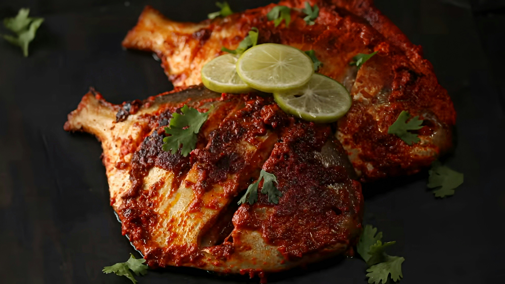
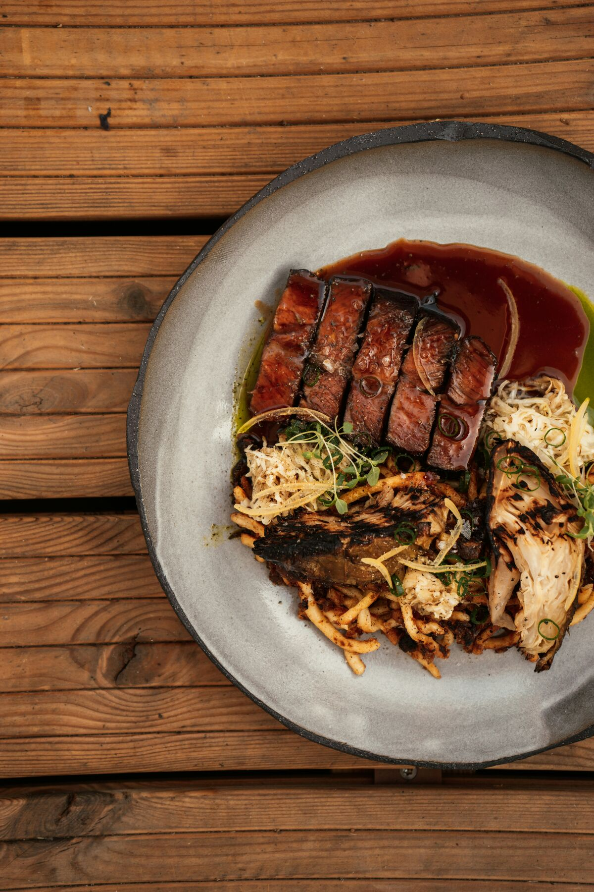
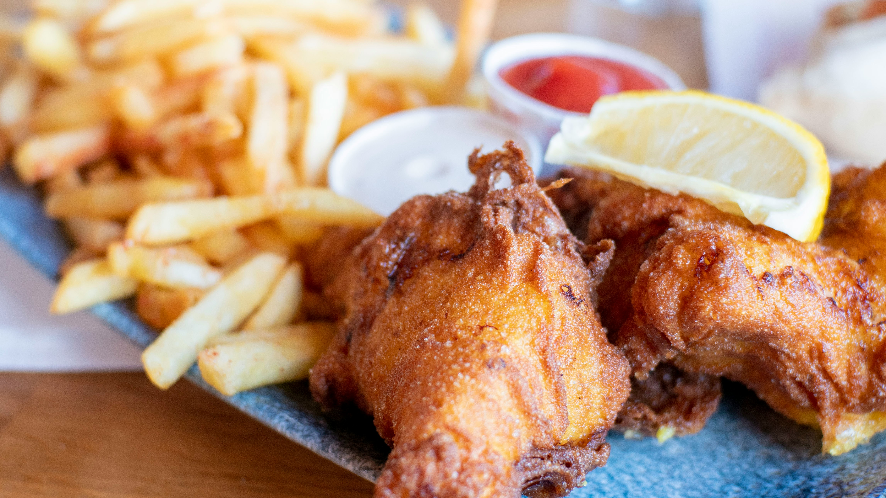
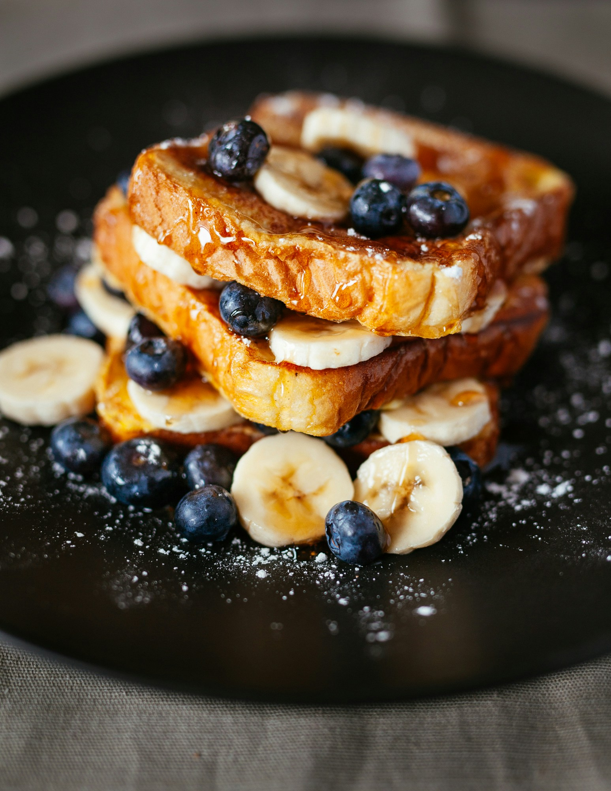
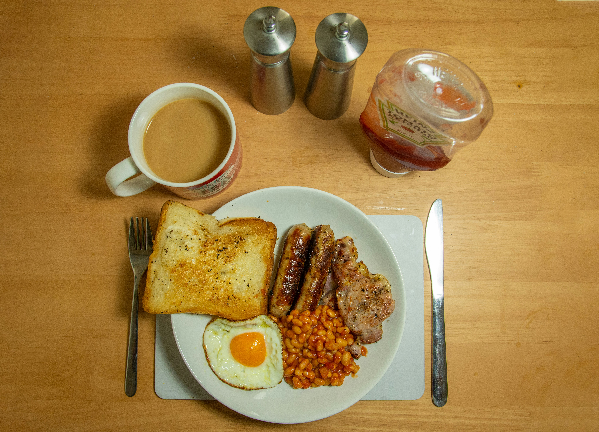

THE SPACE
01 · THE PLACE
A space worth staying in.
See the environment, seating and details that make Koi Circle more than somewhere to simply pick up food.

JUJA · KENYATTA ROAD
Discover Koi Circle — a restaurant built around food, atmosphere and time well spent.
THE KOI EXPERIENCE
Koi Circle is a place to eat, meet and spend time. The website should feel like the restaurant itself — warm, inviting and easy to explore.
From the atmosphere around you to what arrives at your table, every part of the visit belongs to the Koi experience.
01 · THE PLACE
See the environment, seating and details that make Koi Circle more than somewhere to simply pick up food.
02 · THE TABLE
Explore the dishes and flavors available at Koi.
03 · THE MOMENT
A place to meet friends, share a meal and enjoy your time.
A LOOK AROUND KOI




GOOD TO KNOW
Tuesday — Sunday
8:30 AM — 6:30 PMMonday — Closed
Visit Koi in person or explore the available takeaway and delivery options.
Kenyatta Road, Juja, Kenya
Opening hours and service details should be confirmed with Koi before the final website launch.
COME BY
Find Koi Circle along Kenyatta Road in Juja and experience the restaurant for yourself.
READY WHEN YOU ARE
Explore the food, discover the space and make your way to Koi.